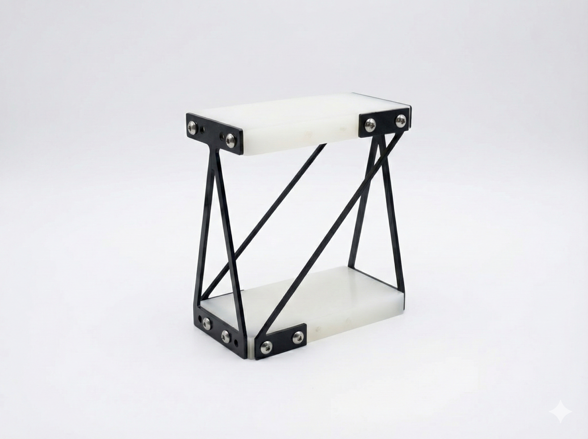
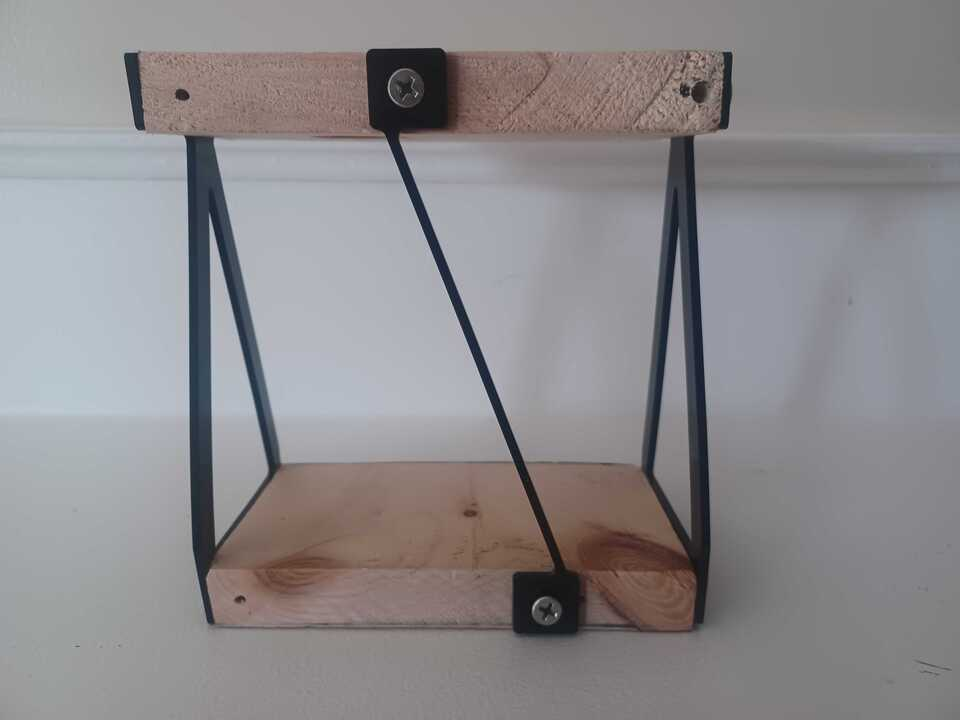
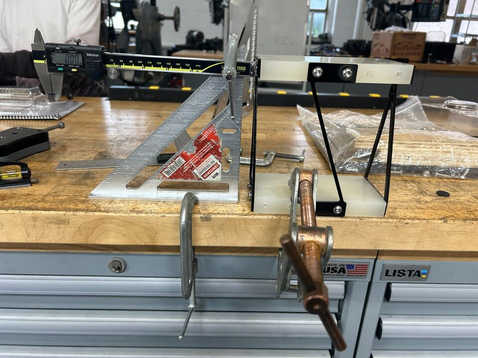
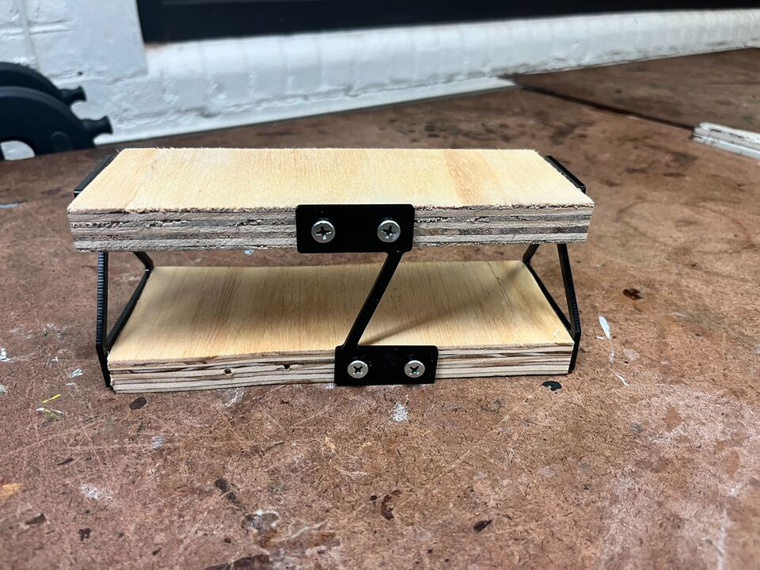

selected project
AFM Stage
Precision positioning — A mechanical stage concept designed around controlled positioning and structural stiffness.

The Challenge
You are charged with building a ‘gadget” that topologically resembles the image. The ‘gadget’ must be capable of illustrating conceptually, the utility of an instrument that can be used to provide rotation, translation and screw motions for accelerated fretting (linear, rotary and screw motions) tests. For the purpose of this exercise, be less concerned with what this interfaces with and focus on the characteristics (kinematics, stiffness, etc…) of the device. For the pitch motion, you will need to illustrate 2 screw motions, with axes that are coincident, but of pitches that differ by 3x (p1 ~ 3mm/5o and p2 ~ 9mm/5o) over a range of 3o. You must create 2 constraints (marked “c” in the figure) that can EASILY be swapped so that the device exhibits the two different screw motions.
The Design
The Process



Reflection
2/5 compliant mechanism designs. Getting harder. Spent a LOT of time mathematically modelling before building. We got stressed, until we decided we just had to get to make something.
← Return to My Projects